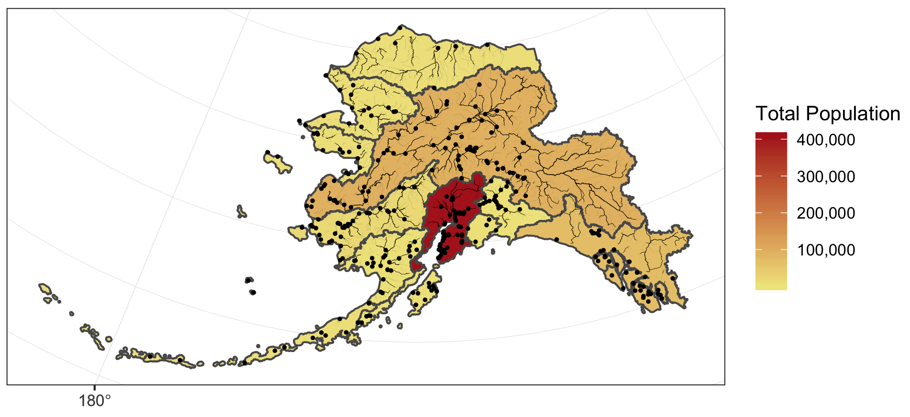

knb_url <- 'https://dev.nceas.ucsb.edu/knb/d1/mn/v2/object/urn%3Auuid%3Aaceaecb2-1ce0-4d41-a839-d3607d32bb58'
download.file(url = knb_url, destfile = 'demo_data.zip')
unzip('demo_data.zip', exdir = 'data')
file.remove('demo_data.zip')Learning Objectives
- How to use the
sfpackage to wrangle spatial data - Static mapping with ggplot
- Adding basemaps to static maps
- Interactive mapping with
leaflet
19.1 Brief introduction to sf
From the sf vignette:
Simple features or simple feature access refers to a formal standard (ISO 19125-1:2004) that describes how objects in the real world can be represented in computers, with emphasis on the spatial geometry of these objects. It also describes how such objects can be stored in and retrieved from databases, and which geometrical operations should be defined for them.
The sf package is an R implementation of Simple Features. This package incorporates:
- a new spatial data class system in R
- functions for reading and writing spatial data
- tools for spatial operations on vectors
Most of the functions in this package starts with prefix st_ which stands for spatial and temporal.
In this lesson, our goal is to use a shapefile of Alaska regions and rivers, and data on population in Alaska by community to create a map that looks like this:

19.2 About the data
All of the data used in this tutorial are simplified versions of real datasets available on the KNB Data Repository. We are using simplified datasets to ease the processing burden on all our computers since the original geospatial datasets are high-resolution. These simplified versions of the datasets may contain topological errors.
The spatial data we will be using to create the map are:
| Data | Original datasets |
|---|---|
| Alaska regional boundaries | Jared Kibele and Jeanette Clark. 2018. State of Alaska’s Salmon and People Regional Boundaries. Knowledge Network for Biocomplexity. doi:10.5063/F1125QWP. |
| Community locations and population | Jeanette Clark, Sharis Ochs, Derek Strong, and National Historic Geographic Information System. 2018. Languages used in Alaskan households, 1990-2015. Knowledge Network for Biocomplexity. doi:10.5063/F11G0JHX. |
| Alaska rivers | The rivers shapefile is a simplified version of Jared Kibele and Jeanette Clark. Rivers of Alaska grouped by SASAP region, 2018. Knowledge Network for Biocomplexity. doi:10.5063/F1SJ1HVW. |
Setup
- Navigate to this dataset on KNB’s test site and download the zip folder.
- Upload the zip folder to the
datafolder in thetraining_{USERNAME}project. You don’t need to unzip the folder ahead of time, uploading will automatically unzip the folder.- Alternatively, programatically download and extract the demo data with:
- Create a new R Markdown file.
- Title it “Intro to sf package for Spatial Data and Making Maps”
- Save the file and name it “intro-sf-spatial-data-maps”.
- Load the following libraries at the top of your R Markdown file.
library(readr)
library(sf)
library(ggplot2)
library(leaflet)
library(scales)
library(ggmap)
library(dplyr)19.3 Exploring the data using plot() and st_crs()
First let’s read in the shapefile of regional boundaries in Alaska using read_sf() and then create a basic plot of the data plot().
# read in shapefile using read_sf()
ak_regions <- read_sf("data/ak_regions_simp.shp")# quick plot
plot(ak_regions)We can also examine it’s class using class().
class(ak_regions)sf objects usually have two types of classes: sf and data.frame.
Unlike a typical data.frame, an sf object has spatial metadata (geometry type, dimension, bbox, epsg (SRID), proj4string) and an additional column typically named geometry that contains the spatial data.
Since our shapefile object has the data.frame class, viewing the contents of the object using the head() function or other exploratory functions shows similar results as if we read in data using read.csv() or read_csv().
head(ak_regions)
glimpse(ak_regions)19.3.1 Coordinate Reference System (CRS)
Every sf object needs a coordinate reference system (or crs) defined in order to work with it correctly. A coordinate reference system contains both a datum and a projection. The datum is how you georeference your points (in 3 dimensions!) onto a spheroid. The projection is how these points are mathematically transformed to represent the georeferenced point on a flat piece of paper. All coordinate reference systems require a datum. However, some coordinate reference systems are “unprojected” (also called geographic coordinate systems). Coordinates in latitude/longitude use a geographic (unprojected) coordinate system. One of the most commonly used geographic coordinate systems is WGS 1984.
ESRI has a blog post that explains these concepts in more detail with very helpful diagrams and examples.
You can view what crs is set by using the function st_crs().
st_crs(ak_regions)This is pretty confusing looking. Without getting into the details, that long string says that this data has a geographic coordinate system (WGS84) with no projection. A convenient way to reference crs quickly is by using the EPSG code, a number that represents a standard projection and datum. You can check out a list of (lots!) of EPSG codes here.
We will use multiple EPSG codes in this lesson. Here they are, along with their more readable names:
- 3338: Alaska Albers (projected CRS)
- 4326: WGS84 (World Geodetic System 1984), used in GPS (unprojected CRS)
- 3857: Pseudo-Mercator, used in Google Maps, OpenStreetMap, Bing, ArcGIS, ESRI (projected CRS)
You will often need to transform your geospatial data from one coordinate system to another. The st_transform() function does this quickly for us. You may have noticed the maps above looked wonky because of the dateline. We might want to set a different projection for this data so it plots nicer. A good one for Alaska is called the Alaska Albers projection, with an EPSG code of 3338.
ak_regions_3338 <- ak_regions %>%
st_transform(crs = 3338)
st_crs(ak_regions_3338)plot(ak_regions_3338)Much better!
19.4 sf & the Tidyverse
sf objects can be used as a regular data.frame object in many operations. We already saw the results of plot() and head().
Since sf objects are data.frames, they play nicely with packages in the tidyverse. Here are a couple of simple examples:
19.4.1 select()
# returns the names of all the columns in dataset
colnames(ak_regions_3338)ak_regions_3338 %>%
select(region)Note the sticky geometry column! The geometry column will stay with your sf object even if it is not called explicitly.
19.4.2 filter()
unique(ak_regions_3338$region)ak_regions_3338 %>%
filter(region == "Southeast")19.5 Spatial Joins
You can also use the sf package to create spatial joins, useful for when you want to utilize two datasets together.
Exercise: How many people live in each of these Alaska regions?
We have some population data, but it gives the population by city, not by region. To determine the population per region we will need to:
- Read in the population data from a
csvand turn it into ansfobject - Use a spatial join (
st_join()) to assign each city to a region - Use
group_by()andsummarize()to calculate the total population by region - Save the spatial object you created using
write_sf()
1. Read in alaska_population.csv using read.csv()
# read in population data
pop <- read_csv("data/alaska_population.csv")Turn pop into a spatial object
The st_join() function is a spatial left join. The arguments for both the left and right tables are objects of class sf which means we will first need to turn our population data.frame with latitude and longitude coordinates into an sf object.
We can do this easily using the st_as_sf() function, which takes as arguments the coordinates and the crs. The remove = F specification here ensures that when we create our geometry column, we retain our original lat lng columns, which we will need later for plotting. Although it isn’t said anywhere explicitly in the file, let’s assume that the coordinate system used to reference the latitude longitude coordinates is WGS84, which has a crs number of 4326.
pop_4326 <- st_as_sf(pop,
coords = c('lng', 'lat'),
crs = 4326,
remove = F)
head(pop_4326)2. Join population data with Alaska regions data using st_join()
Now we can do our spatial join! You can specify what geometry function the join uses (st_intersects, st_within, st_crosses, st_is_within_distance…) in the join argument. The geometry function you use will depend on what kind of operation you want to do, and the geometries of your shapefiles.
In this case, we want to find what region each city falls within, so we will use st_within.
pop_joined <- st_join(pop_4326, ak_regions_3338, join = st_within)This gives an error!
Error: st_crs(x) == st_crs(y) is not TRUETurns out, this won’t work right now because our coordinate reference systems are not the same. Luckily, this is easily resolved using st_transform(), and projecting our population object into Alaska Albers.
pop_3338 <- st_transform(pop_4326, crs = 3338)pop_joined <- st_join(pop_3338, ak_regions_3338, join = st_within)
head(pop_joined)3. Calculate the total population by region using group_by() and summarize()
Next we compute the total population for each region. In this case, we want to do a group_by() and summarise() as this were a regular data.frame. Otherwise all of our point geometries would be included in the aggregation, which is not what we want. Our goal is just to get the total population by region. We remove the sticky geometry using as.data.frame(), on the advice of the sf::tidyverse help page.
pop_region <- pop_joined %>%
as.data.frame() %>%
group_by(region) %>%
summarise(total_pop = sum(population))
head(pop_region)And use a regular left_join() to get the information back to the Alaska region shapefile. Note that we need this step in order to regain our region geometries so that we can make some maps.
pop_region_3338 <- left_join(ak_regions_3338, pop_region, by = "region")
# plot to check
plot(pop_region_3338["total_pop"])So far, we have learned how to use sf and dplyr to use a spatial join on two datasets and calculate a summary metric from the result of that join.
Say we want to calculate the population by Alaska management area, as opposed to region.
pop_mgmt_338 <- pop_region_3338 %>%
group_by(mgmt_area) %>%
summarize(total_pop = sum(total_pop))
plot(pop_mgmt_338["total_pop"])Notice that the region geometries were combined into a single polygon for each management area.
If we don’t want to combine geometries, we can specify do_union = F as an argument.
pop_mgmt_3338 <- pop_region_3338 %>%
group_by(mgmt_area) %>%
summarize(total_pop = sum(total_pop), do_union = F)
plot(pop_mgmt_3338["total_pop"])4. Save the spatial object to a new file using write_sf()
Save the spatial object to disk using write_sf() and specifying the filename. Writing your file with the extension .shp will assume an ESRI driver driver, but there are many other format options available.
write_sf(pop_region_3338, "data/ak_regions_population.shp")19.5.1 Visualize with ggplot
ggplot2 now has integrated functionality to plot sf objects using geom_sf().
We can plot sf objects just like regular data.frames using geom_sf.
ggplot(pop_region_3338) +
geom_sf(aes(fill = total_pop)) +
labs(fill = "Total Population") +
scale_fill_continuous(low = "khaki",
high = "firebrick",
labels = comma) +
theme_bw()We can also plot multiple shapefiles in the same plot. Say if we want to visualize rivers in Alaska, in addition to the location of communities, since many communities in Alaska are on rivers. We can read in a rivers shapefile, doublecheck the crs to make sure it is what we need, and then plot all three shapefiles - the regional population (polygons), the locations of cities (points), and the rivers (linestrings).
rivers_3338 <- read_sf("data/ak_rivers_simp.shp")
st_crs(rivers_3338)Note that although no EPSG code is set explicitly, with some sluething we can determine that this is EPSG:3338. This site is helpful for looking up EPSG codes.
ggplot() +
geom_sf(data = pop_region_3338, aes(fill = total_pop)) +
geom_sf(data = pop_3338, size = 0.5) +
geom_sf(data = rivers_3338,
aes(linewidth = StrOrder)) +
scale_linewidth(range = c(0.05, 0.5), guide = "none") +
labs(title = "Total Population by Alaska Region",
fill = "Total Population") +
scale_fill_continuous(low = "khaki",
high = "firebrick",
labels = comma) +
theme_bw() 19.6 Incorporate base maps into static maps using ggmap
The ggmap package has some functions that can render base maps (as raster objects) from open tile servers like Google Maps, Stamen, OpenStreetMap, and others.
We’ll need to transform our shapefile with population data by community to EPSG:3857 which is the crs used for rendering maps in Google Maps, Stamen, and OpenStreetMap, among others.
pop_3857 <- pop_3338 %>%
st_transform(crs = 3857)Next, let’s grab a base map from the Stamen map tile server covering the region of interest. First we include a function that transforms the bounding box (which starts in EPSG:4326) to also be in the EPSG:3857 CRS, which is the projection that the map raster is returned in from Stamen. This is an issue with ggmap described in more detail here
# Define a function to fix the bbox to be in EPSG:3857
# See https://github.com/dkahle/ggmap/issues/160#issuecomment-397055208
ggmap_bbox_to_3857 <- function(map) {
if (!inherits(map, "ggmap"))
stop("map must be a ggmap object")
# Extract the bounding box (in lat/lon) from the ggmap to a numeric vector,
# and set the names to what sf::st_bbox expects:
map_bbox <- setNames(unlist(attr(map, "bb")),
c("ymin", "xmin", "ymax", "xmax"))
# Coonvert the bbox to an sf polygon, transform it to 3857,
# and convert back to a bbox (convoluted, but it works)
bbox_3857 <-
st_bbox(st_transform(st_as_sfc(st_bbox(map_bbox, crs = 4326)), 3857))
# Overwrite the bbox of the ggmap object with the transformed coordinates
attr(map, "bb")$ll.lat <- bbox_3857["ymin"]
attr(map, "bb")$ll.lon <- bbox_3857["xmin"]
attr(map, "bb")$ur.lat <- bbox_3857["ymax"]
attr(map, "bb")$ur.lon <- bbox_3857["xmax"]
map
}Next, we define the bounding box of interest, and use get_stamenmap() to get the basemap. Then we run our function defined above on the result of the get_stamenmap() call.
bbox <- c(-170, 52,-130, 64) # this is roughly southern Alaska
ak_map <- get_stamenmap(bbox, zoom = 4) # get base map
ak_map_3857 <- ggmap_bbox_to_3857(ak_map) # fix the bbox to be in EPSG:3857Finally, plot both the base raster map with the population data overlayed, which is easy now that everything is in the same projection (3857):
ggmap(ak_map_3857) +
geom_sf(data = pop_3857,
aes(color = population),
inherit.aes = F) +
scale_color_continuous(low = "khaki",
high = "firebrick",
labels = comma)19.7 Visualize sf objects with leaflet
We can also make an interactive map from our data above using leaflet.
leaflet (unlike ggplot) will project data for you. The catch is that you have to give it both a projection (like Alaska Albers), and that your shapefile must use a geographic coordinate system. This means that we need to use our shapefile with the 4326 EPSG code. Remember you can always check what crs you have set using st_crs.
Here we define a leaflet projection for Alaska Albers, and save it as a variable to use later.
epsg3338 <- leaflet::leafletCRS(
crsClass = "L.Proj.CRS",
code = "EPSG:3338",
proj4def = "+proj=aea +lat_1=55 +lat_2=65 +lat_0=50 +lon_0=-154 +x_0=0 +y_0=0 +ellps=GRS80 +towgs84=0,0,0,0,0,0,0 +units=m +no_defs",
resolutions = 2 ^ (16:7)
)You might notice that this looks familiar! The syntax is a bit different, but most of this information is also contained within the crs of our shapefile:
st_crs(pop_region_3338)Since leaflet requires that we use an unprojected coordinate system, let’s use st_transform() yet again to get back to WGS84.
pop_region_4326 <- pop_region_3338 %>% st_transform(crs = 4326)m <- leaflet(options = leafletOptions(crs = epsg3338)) %>%
addPolygons(data = pop_region_4326,
fillColor = "gray",
weight = 1)
mWe can add labels, legends, and a color scale.
pal <- colorNumeric(palette = "Reds", domain = pop_region_4326$total_pop)
m <- leaflet(options = leafletOptions(crs = epsg3338)) %>%
addPolygons(
data = pop_region_4326,
fillColor = ~ pal(total_pop),
weight = 1,
color = "black",
fillOpacity = 1,
label = ~ region
) %>%
addLegend(
position = "bottomleft",
pal = pal,
values = range(pop_region_4326$total_pop),
title = "Total Population"
)
mWe can also add the individual communities, with popup labels showing their population, on top of that!
pal <- colorNumeric(palette = "Reds", domain = pop_region_4326$total_pop)
m <- leaflet(options = leafletOptions(crs = epsg3338)) %>%
addPolygons(
data = pop_region_4326,
fillColor = ~ pal(total_pop),
weight = 1,
color = "black",
fillOpacity = 1
) %>%
addCircleMarkers(
data = pop_4326,
lat = ~ lat,
lng = ~ lng,
radius = ~ log(population / 500),
# arbitrary scaling
fillColor = "gray",
fillOpacity = 1,
weight = 0.25,
color = "black",
label = ~ paste0(pop_4326$city, ", population ", comma(pop_4326$population))
) %>%
addLegend(
position = "bottomleft",
pal = pal,
values = range(pop_region_4326$total_pop),
title = "Total Population"
)
m19.8 More Spatial Resources
There is a lot more functionality to sf including the ability to intersect polygons, calculate distance, create a buffer, and more. Here are some more great resources and tutorials for a deeper dive into this great package: